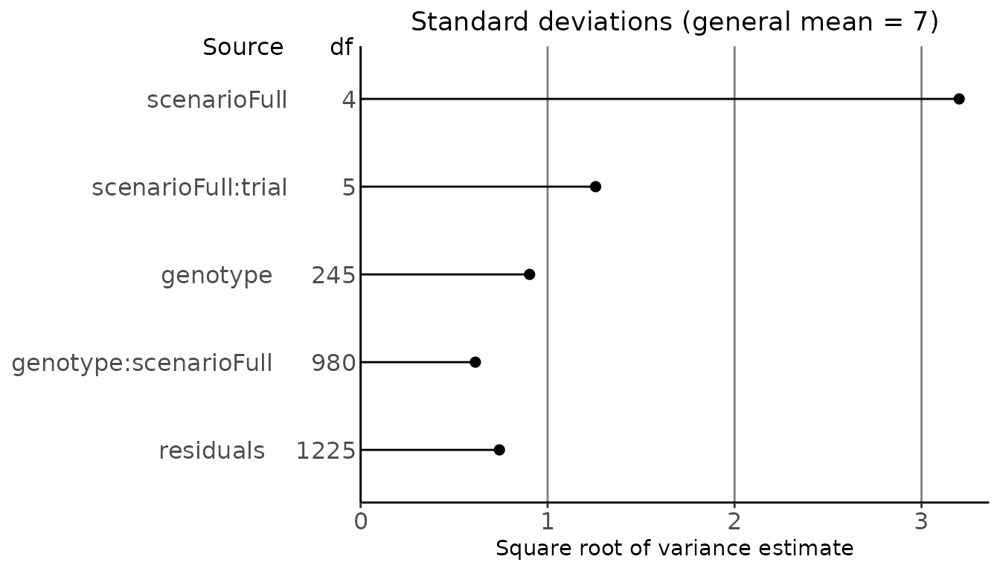

Genotype by Environment analysis using statgenGxE
Bart-Jan van Rossum
2022-08-16
Source:vignettes/statgenGxE.Rmd
statgenGxE.RmdThe statgenGxE package
The statgenGxE package is developed as an easy-to-use package for Genotype by Environment (GxE) analysis for data of plant breeding experiments with many options for plotting and reporting the results of the analyses.
This vignette describes how to perform the different types of analysis that are available in the package. The availability of functions in the package is based on the analyses described in Malosetti, Ribaut, and van Eeuwijk (2013). Further suggested reading is van Eeuwijk, Bustos-Korts, and Malosetti (2016).
The following types of analysis can be done using statgenGxE:
- Mixed model analysis of GxE table of means
- Finlay-Wilkinson Analysis
- AMMI Analysis
- GGE Analysis
- Identifying mega environments
- Stability measures
- Modeling of heterogeneity of genetic variances and correlations
For most of the analyses a pdf report can be created automatically, see Reporting.
Note that due to technical restrictions the number of significant digits printed in tables throughout this vignette is not always optimal. In practice precision of the output can always be specified by the user.
Data preparation
The use of the package is demonstrated using maize data from the European Union project DROPS (https://cordis.europa.eu/project/id/244374). The data is available from https://doi.org/10.15454/IASSTN (E. J. Millet et al. 2019) and the relevant data set is included as data.frame in the statgenGxE package.
The first step is loading the data into R.
data(dropsPheno)dropsPheno contains data for the genotypic means (Best Linear Unbiased Estimators, BLUEs), with one value per genotype per experiment, for a selection of 10 experiments from the full data set and eight traits. These 10 experiments form a good representation of the full set of experiments covering the five scenarios described in E. Millet et al. (2016). Throughout this vignette in all examples the trait grain.yield will be analyzed. For a more detailed description of the contents of the data see help(dropsData).
The input for GxE analysis in the statgenGxE package is an object of class TD (Trial Data). For a detailed description on how to construct such an object see the vignette of the statgenSTA package (vignette("Modeling field trials using statgenSTA")). For GxE analysis it is enough to specify the genotype and trial option of the createTD function.
## Create a TD object from dropsPheno.
dropsTD <- statgenSTA::createTD(data = dropsPheno, genotype = "Variety_ID", trial = "Experiment")Before doing any analysis, we can first have a look at the contents of the data. To explore heterogeneity of genetic variance we can create a box plot. Coloring the boxes by environmental scenario will provide valuable extra information.
## Create a box plot of dropsTD.
## Color the boxes based on the variable scenarioFull.
## Plot in descending order.
plot(dropsTD, plotType = "box", traits = "grain.yield", colorTrialBy = "scenarioFull",
orderBy = "descending")From the plot it is clear that the trials in the hot, water deficient environments have a lower median and range than the other trials.
For further insight into the correlation structure between trials a scatter plot matrix can be made.
## Create a scatter plot of dropsTD.
## Color the genotypes based on the variable geneticGroup.
## Color the histograms for trials based on the variable scenarioFull.
plot(dropsTD, plotType = "scatter", traits = "grain.yield", colorGenoBy = "geneticGroup",
colorTrialBy = "scenarioFull",
trialOrder = c("Gai12W", "Kar13R", "Kar12W", "Kar13W", "Mar13R", "Mur13W",
"Mur13R", "Ner12R", "Cam12R", "Cra12R"))
Coloring of genotypes and trials
In all plots the default colors for both genotype groups and trial groups are chosen from a predefined color palette. For genotype groups the color palette is “Dark 2”, for trial groups it is “Alphabet”. See here for an overview of these colors.
It is possible to specify different colors for genotype groups and trial groups per plot using the options colGeno and colTrial respectively. Also, more conveniently, the default colors can be set using the options statgen.genoColors and statgen.trialColors.
## Set default colors for genotypes and trials.
options("statgen.genoColors" = c("blue", "green", "yellow"))
options("statgen.trialColors" = c("red", "brown", "purple"))If a plot has more genotype groups than the number of colors specified as default colors, the default colors will be ignored and topo.colors will be used instead. For trial groups this is done in a similar way.
Mixed model analysis of GxE table of means
To investigate the structure of the genotype by environment data various mixed models can be fitted. In the statgenGxE package this can be done using the gxeVarComp function.
Six different types of models can be fitted depending on the structure of the environments in the data. These models are described in the table below, together with the function parameters used in gxeVarComp to fit the model.
| Structure of environments | Model | Function parameters |
|---|---|---|
| Environments correspond to trials | trait = trial + genotype + genotype:trial | |
| Trials form a factorial structure of locations x years | trait = year + location + year:location + genotype + genotype:year + genotype:location + genotype:year:location | locationYear = TRUE |
| Trials are nested within year | trait = year + year:trial + genotype + genotype:year + genotype:year:trial | nestingFactor = "year" |
| Trials are nested within locations | trait = location + location:trial + genotype + genotype:location + genotype:location:trial | nestingFactor = "loc" |
| Trials correspond to locations within regions across years | trait = region + region:location + year + region:year + region:location:year + genotype + genotype:region + genotype:region:location + genotype:year + genotype:region:year + genotype:region:location:year | regionLocationYear = TRUE |
| Trials are nested within scenarios | trait = scenario + scenario:trial + genotype + genotype:scenario + genotype:scenario:trial | nestingFactor = "scenario" |
For data in the form of GxE means, the last random term in all models above will become a residual term. If the GxE means are provided together with weights, then a residual term will be added to the models above. Be aware that when plot data are provided as input data, the mixed model analysis will be based on the assumption of completely randomized trials, which in almost all cases will not be appropriate for multi-environment trials.
All models can be fitted using either lme4 or asreml. This can be specified using the engine parameter.
For diagnostic purposes and to identify the main sources of variation, all models are fitted three times:
- With all terms fixed
- With all terms random
- As a mixed model, with the bold terms as random and the others as fixed
Model fitted with all terms as fixed
The function first fits a model where all model terms are included as fixed terms. Based on the ANOVA table of this model, terms in the fixed part of the model that are likely to give a problem when fitting the mixed model are removed because of the reduced connectivity and number of available observations to estimate that model term. Also a warning is printed if the mean sum of squares for a model term points to a possible zero variance component in the mixed model.
Model fitted with all terms as random
Then a model is fitted where all model terms are included as random terms. Based on the variance components in this model the percentage of variance explained by each of the model components is determined. The percentages of variance are printed in the model summary, together with the variance components. The latter are presented on a standard deviation scale.
Mixed model
Finally a mixed model is fitted as specified in the table above. Based on this model, variance components can be extracted, heritabilities on a line mean basis (across all trials) can be computed and predictions can be made. It is also possible to plot the results.
## Fit a model where trials are nested within scenarios.
dropsVarComp <- gxeVarComp(TD = dropsTD, trait = "grain.yield", nestingFactor = "scenarioFull")
summary(dropsVarComp)
#> Fitted model formula final mixed model
#>
#> grain.yield ~ scenarioFull + scenarioFull:trial + (1 | genotype) + (1 | genotype:scenarioFull)
#>
#> Sources of variation for fully random model:
#> grain.yield ~ (1 | scenarioFull) + (1 | scenarioFull:trial) + (1 | genotype) + (1 | genotype:scenarioFull)
#>
#> Component % Variance expl.
#> scenarioFull 10.25 75.51 %
#> scenarioFull:trial 1.58 11.64 %
#> genotype 0.82 6.02 %
#> genotype:scenarioFull 0.38 2.77 %
#> residuals 0.55 4.06 %
#>
#> Analysis of Variance Table for fully fixed model:
#> grain.yield ~ scenarioFull + scenarioFull:trial + genotype + genotype:scenarioFull
#>
#> Df Sum Sq Mean Sq F value Pr(>F)
#> scenarioFull 4 21730.5 5432.6 9859.988 < 2.2e-16 ***
#> scenarioFull:trial 5 1946.8 389.4 706.658 < 2.2e-16 ***
#> genotype 245 2320.6 9.5 17.191 < 2.2e-16 ***
#> genotype:scenarioFull 980 1278.1 1.3 2.367 < 2.2e-16 ***
#> residuals 1225 674.9 0.6
#> ---
#> Signif. codes: 0 '***' 0.001 '**' 0.01 '*' 0.05 '.' 0.1 ' ' 1Note that because the model is fitted with lme4, in this and further tables no standard errors are outputted. When using asreml for modeling standard errors will be available.
The diagnostics for the fitted model can be printed using the diagnostics function. This will print an incidence matrix of missing values for each of the terms in the random part of the fitted model.
## Print diagnostics - output suppressed because of the large number of rows.
diagnostics(dropsVarComp)Extracting the variance components from the fitted model can be done using the vc function. The heritability (across trials) is computed using herit.
## Extract variance components.
vc(dropsVarComp)
#> Component
#> genotype 0.8167
#> genotype:scenarioFull 0.3766
#> residuals 0.5510
## Compute heritability.
herit(dropsVarComp)
#> [1] 0.8149A plot can be made of the square roots of the variance component estimates. These are based on the fully random model.
## Plot the results of the fitted model.
plot(dropsVarComp) Predictions for the mixed model can be made for model terms that represent different levels of data aggregation; for the genotype main effect or for genotypic performance in grouped environments, or for genotypic performance in individual trials. These levels can be specified by the parameter predictLevel.
## Predictions of the genotype main effect.
predGeno <- predict(dropsVarComp)
head(predGeno)
#> genotype predictedValue
#> 1 11430 6.725
#> 2 A3 6.319
#> 3 A310 5.722
#> 4 A347 5.576
#> 5 A374 7.470
#> 6 A375 6.650
## predictions at the level of genotype x scenarioFull.
predGenoTrial <- predict(dropsVarComp, predictLevel = "scenarioFull")
head(predGenoTrial)
#> genotype scenarioFull predictedValue
#> 1 11430 WW.Cool 10.681
#> 2 A3 WW.Cool 9.504
#> 3 A310 WW.Cool 9.793
#> 4 A347 WW.Cool 8.751
#> 5 A374 WW.Cool 10.970
#> 6 A375 WW.Cool 9.775Finlay-Wilkinson Analysis
With the Finlay-Wilkinson Analysis (Finlay and Wilkinson 1963) we describe genotype by environment interaction by the heterogeneity of the slopes of a regression of individual genotypic performance on an environmental index. The environmental index is the average of all genotypes in an environment. The intercept expresses general performance across all environments, the slope represents adaptability, and the residuals may indicate a measure for stability.
The model fitted in the analysis is \(y_{ij} = \mu + G_i + \beta_iE_j + \epsilon_{ij}\), where \(y_{ij}\) is the phenotypic value of genotype \(i\) in environment \(j\), \(\mu\) is the general mean, \(G_i\) is the genotypic effect, \(\beta_i\) a sensitivity parameters, \(E_j\) the environment effect and \(\epsilon_{ij}\) a residual.
In the statgenGxE package this analysis can be done using the gxeFW function. The model described above is fitted using an alternating regression algorithm. First, using starting values for \(\beta_i\) and \(G_i\), \(E_j\) is estimated. Next, \(E_j\) is assumed known and \(\beta_i\) and \(G_i\) are estimated. This process is continued until convergence, i.e. until the change in \(\beta_i\) between iterations is less then a specified tolerance (default 0.001). When estimating parameters, missing observations are estimated as well.
By default all trials in the TD object are used in the analysis, but this can be restricted using the parameter trials. The genotypes included in the analysis can be restricted using genotypes.
## Perform a Finlay-Wilkinson analysis for all trials.
dropsFW <- gxeFw(TD = dropsTD, trait = "grain.yield")
summary(dropsFW)
#> Environmental effects
#> =====================
#> Trial EnvEff SE_EnvEff EnvMean SE_EnvMean Rank
#> 1 Cam12R -4.93016532 0.0710838 1.97041 0.526746 9
#> 2 Cra12R -5.41700099 0.0710838 1.48358 0.564494 10
#> 3 Gai12W 4.29088420 0.0710838 11.19145 0.478808 1
#> 4 Kar12W 2.81602440 0.0710838 9.71659 0.378874 3
#> 5 Kar13R 2.98347060 0.0710838 9.88404 0.389212 2
#> 6 Kar13W 1.14169667 0.0710838 8.04227 0.298929 4
#> 7 Mar13R 0.83532848 0.0710838 7.73590 0.290526 5
#> 8 Mur13R -0.00198925 0.0710838 6.89858 0.280534 7
#> 9 Mur13W 0.53202700 0.0710838 7.43260 0.284630 6
#> 10 Ner12R -2.25027579 0.0710838 4.65030 0.346565 8
#>
#> Anova
#> =====
#> Df Sum Sq Mean Sq F value Pr(>F)
#> Trial 9 23677 2630.8 3329.261 <2e-16 ***
#> Genotype 245 2321 9.5 11.986 <2e-16 ***
#> Sensitivities 245 404 1.6 2.088 <2e-16 ***
#> Residual 1960 1549 0.8
#> Total 2459 27951 11.4
#> ---
#> Signif. codes: 0 '***' 0.001 '**' 0.01 '*' 0.05 '.' 0.1 ' ' 1
#>
#> Most sensitive genotypes
#> ========================
#> Genotype GenMean SE_GenMean Rank Sens SE_Sens MSdeviation
#> Lo1251 9.03024 0.280534 1 1.34779 0.0904284 1.507974
#> DK78371A 7.34072 0.280534 2 1.29340 0.0904284 0.313889
#> PHG83 7.79922 0.280534 3 1.29337 0.0904284 1.447104
#> FR697 7.48625 0.280534 4 1.27416 0.0904284 0.917458
#> SC-Malawi 7.12909 0.280534 5 1.26473 0.0904284 1.272097Four types of plots can be made to investigate the output from the analysis. plotType = "scatter" creates three scatter plots where genotypic mean, square root of the mean squared deviation and sensitivity are plotted against each other.
## Create scatter plot for Finlay Wilkinson analysis.
## Color genotypes by geneticGroup.
plot(dropsFW, plotType = "scatter", colorGenoBy = "geneticGroup")
With plotType = "line" a plot with fitted lines for all genotypes in the analysis is created.
## Create line plot for Finlay Wilkinson analysis.
## Color genotypes by geneticGroup.
plot(dropsFW, plotType = "line", colorGenoBy = "geneticGroup")
plotType = "trellis" creates a trellis plot with observations and slopes per genotype. At most 64 genotypes are plotted. It is possible to select a subset of genotypes for plotting using the parameter genotypes.
## Create trellis plot for Finlay Wilkinson analysis.
## Restrict to first 5 genotypes.
plot(dropsFW, plotType = "trellis", genotypes = c("11430", "A3", "A310", "A347", "A374"))
plottType = "scatterFit" creates a scatter plot of fitted values in the trial with the highest environmental effect against the fitted values in the trial with the lowest environmental effect.
## Create scatter plot of fitted values for Finlay Wilkinson analysis.
## Color genotypes by geneticGroup.
plot(dropsFW, plotType = "scatterFit", colorGenoBy = "geneticGroup")
AMMI Analysis
The Additive Main Effects and Multiplicative Interaction (AMMI) model fits a model which involves the Additive Main effects (i.e. genotype and trial) along with Multiplicative Interaction effects. The additive effects are the classical ANOVA main effects for genotype and environment, the multiplicative effects follow from a principal component analysis on the interaction residuals (= genotype by environment means after adjustment for additive genotype and environment effects). This results in an interaction characterized by Interaction Principal Components (IPCA) enabling simultaneous plotting of genotypes and trials.
If the data contains missing values, those are imputed first using an iterative regression algorithm. This algorithm regresses each environment in turn on all others. This process is repeated until the difference between the fitted values in subsequent iterations becomes sufficiently small (see help(multMissing) for further details).
After imputation the model fitted in the analysis is \(y_{ij} = \mu + G_i + E_j + \Sigma_{m =1}^M\gamma_{mi}\delta_{mj} + \epsilon_{ij}\), where \(M\) is the number of principal components, \(y_{ij}\) is the phenotypic value of genotype \(i\) in environment \(j\), \(\mu\) is the general mean, \(G_i\) is the genotypic effect, \(E_j\) the environmental effect, \(\gamma_{mi}\) the genotypic scores, \(\delta_{mj}\) the environmental scores, and \(\epsilon_{ij}\) a residual.
The AMMI analysis can be performed with the statgenGxE package using the function gxeAmmi.
## Run gxeAmmi for grain.yield.
dropsAm <- gxeAmmi(TD = dropsTD, trait = "grain.yield")
summary(dropsAm)
#> Principal components
#> ====================
#> PC1 PC2
#> Standard deviation 1.59365 1.16125
#> Proportion of Variance 0.31860 0.16916
#> Cumulative Proportion 0.31860 0.48776
#>
#> Anova
#> =====
#> Analysis of Variance Table
#>
#> Response: grain.yield
#> Df Sum Sq Mean Sq F value Pr(>F)
#> Trial 9 23677 2630.8 2970.187 <2e-16 ***
#> Genotype 245 2321 9.5 10.694 <2e-16 ***
#> Interactions 2205 1953 0.9
#> PC1 253 622 2.5 4.182 <2e-16 ***
#> PC2 251 330 1.3 2.238 <2e-16 ***
#> Residuals 1701 1000 0.6
#> ---
#> Signif. codes: 0 '***' 0.001 '**' 0.01 '*' 0.05 '.' 0.1 ' ' 1
#>
#> Environment scores
#> ==================
#> PC1 PC2
#> Cam12R 0.4422147 0.1214471
#> Cra12R 0.4357878 0.0228969
#> Gai12W 0.0693329 -0.4178891
#> Kar12W -0.0329114 0.2499027
#> Kar13R -0.3648773 -0.4132687
#> Kar13W -0.3620128 -0.3924541
#> Mar13R 0.0924811 0.1666174
#> Mur13R -0.2854567 0.3230107
#> Mur13W -0.3539324 0.5112075
#> Ner12R 0.3593742 -0.1714703With the default settings in the AMMI analysis a maximum of two principal components are used. This can be changed using the parameter nPC in the function. The number of principal components should be lower than the smallest of the number of genotypes or environments minus one. By specifying nPC = NULL the algorithm will determine the number of principal components by a method of forward selection.
## Run gxeAmmi. Let algorithm determine number of principal components.
dropsAm2 <- gxeAmmi(TD = dropsTD, trait = "grain.yield", nPC = NULL)
summary(dropsAm2)
#> Principal components
#> ====================
#> PC1 PC2 PC3 PC4 PC5 PC6 PC7
#> Standard deviation 1.59365 1.16125 1.03717 0.931089 0.825373 0.711735 0.661859
#> Proportion of Variance 0.31860 0.16916 0.13494 0.108750 0.085460 0.063550 0.054950
#> Cumulative Proportion 0.31860 0.48776 0.62270 0.731450 0.816910 0.880460 0.935410
#>
#> Anova
#> =====
#> Analysis of Variance Table
#>
#> Response: grain.yield
#> Df Sum Sq Mean Sq F value Pr(>F)
#> Trial 9 23677 2630.8 2970.187 < 2e-16 ***
#> Genotype 245 2321 9.5 10.694 < 2e-16 ***
#> Interactions 2205 1953 0.9
#> PC1 253 622 2.5 9.280 < 2e-16 ***
#> PC2 251 330 1.3 4.967 < 2e-16 ***
#> PC3 249 264 1.1 3.994 < 2e-16 ***
#> PC4 247 212 0.9 3.245 < 2e-16 ***
#> PC5 245 167 0.7 2.570 < 2e-16 ***
#> PC6 243 124 0.5 1.927 7.04e-10 ***
#> PC7 241 107 0.4 1.680 9.66e-07 ***
#> Residuals 476 126 0.3
#> ---
#> Signif. codes: 0 '***' 0.001 '**' 0.01 '*' 0.05 '.' 0.1 ' ' 1
#>
#> Environment scores
#> ==================
#> PC1 PC2 PC3 PC4 PC5 PC6 PC7
#> Cam12R 0.4422147 0.1214471 -0.2369571 0.0930633 -0.2551905 0.1253164 0.1961217
#> Cra12R 0.4357878 0.0228969 -0.3241345 0.0408753 -0.3491380 0.1273883 0.0138441
#> Gai12W 0.0693329 -0.4178891 -0.1744131 0.2772191 0.6223073 0.3705224 -0.2762854
#> Kar12W -0.0329114 0.2499027 0.7045194 0.5170036 -0.1714308 0.1483767 -0.1121918
#> Kar13R -0.3648773 -0.4132687 0.0376676 0.0679819 -0.0676313 -0.0331790 0.7592167
#> Kar13W -0.3620128 -0.3924541 -0.0402238 -0.2244351 -0.5039275 -0.0615522 -0.5330438
#> Mar13R 0.0924811 0.1666174 0.3375440 -0.7634903 0.1925495 0.3287360 0.0748694
#> Mur13R -0.2854567 0.3230107 -0.1777747 0.0157987 0.1310997 0.0625228 -0.0122844
#> Mur13W -0.3539324 0.5112075 -0.3419304 0.0474776 0.1619466 -0.2876442 -0.0503901
#> Ner12R 0.3593742 -0.1714703 0.2157025 -0.0714941 0.2394149 -0.7804873 -0.0598564From the summary it is clear that the final number of principal components, determined by forward selection, is seven.
It is possible to exclude certain genotypes, e.g. outliers, from the analysis using the parameter excludeGeno.
## Run gxeAmmi with three principal components.
## Exclude genotypes 11430 and A3.
dropsAm3 <- gxeAmmi(TD = dropsTD, trait = "grain.yield", nPC = 3,
excludeGeno = c("11430", "A3"))If the data contains a column year, it is possible to fit a separate AMMI model for each year. This can be done by specifying the parameter byYear = TRUE. This will run an AMMI analysis for all years in the data without taking into account the data for the other years.
## Run gxeAmmi per year in the data.
dropsAmYear <- gxeAmmi(TD = dropsTD, trait = "grain.yield", byYear = TRUE)The results of the AMMI analysis can be displayed in two types of plot. “AMMI1” plots the first principal component against the main effects. “AMMI2” plots the second against the first principal component.
## Create an AMMI1 plot.
plot(dropsAm, plotType = "AMMI1")
AMMI biplots appear in three forms (Gower and Hand 1996):
- genotype scaling, with emphasis on approximation of relations between genotypes (scale = 0)
- environment scaling, with emphasis on approximation of relations between environments (scale = 1)
- symmetric scaling, a compromise (scale = 0.5)
## Create an AMMI2 biplot with symmetric scaling.
plot(dropsAm, scale = 0.5, plotType = "AMMI2")
The AMMI plot function has many options to customize the plot. It is possible to plot different principal components on the axes specifying primAxis and secAxis. Genotypes can be grouped and colored by a variable in the data using colorGenoBy. Specify custom colors in colGeno. Similarly for coloring environments use colorEnvBy and colEnv.
## Create an AMMI2 biplot.
## Color genotypes based on variable geneticGroup. Use custom colors.
## Color environments based on variable scenarioFull.
plot(dropsAm, scale = 0.4, plotType = "AMMI2",
colorGenoBy = "geneticGroup", colGeno = c("red", "blue", "green", "yellow"),
colorEnvBy = "scenarioFull")A convex hull can be plotted around the genotypes in an AMMI2 biplot.
## Create an AMMI2 biplot with convex hull around the genotypes.
plot(dropsAm, scale = 0.4, plotType = "AMMI2", plotConvHull = TRUE, colorEnvBy = "scenarioFull")
For easier interpretation of the results shown in the biplots, it is possible to rotate the whole plot to a configuration specified by the user. This can be done by setting rotatePC to an environment or a genotype that should be aligned with the positive x-axis in the plot.
## Create an AMMI2 biplot.
## Align environment Mur13W with the positive x-axis.
plot(dropsAm, scale = 0.4, plotType = "AMMI2", colorEnvBy = "scenarioFull",
rotatePC = "Mur13W")Genotypes can be left out of the plot completely by setting plotGeno = FALSE and similarly plotEnv = FALSE assures no environments are plotted. For displaying genotypes by their names instead of points, use sizeGeno with a size larger than zero to indicate their text size. envFactor can be used to blow up the environmental scores in the plot. A value for envFactor between zero and one effectively blows up the genotypic scores. See help(plot.AMMI) for full details on all plotting options.
GGE Analysis
A Genotype plus Genotype by Environment (GGE) analysis is very similar to an AMMI analysis. The difference is in the first step where, instead of genotype and environment, only environment is fitted as a main effect in the model. Therefore, the principal component analysis is performed on the genotype main effect and the interaction jointly. In essence, the GGE analysis fits a principal components model with two components to the two-way genotype by environment table with data centered per environment.
The model fitted in the GGE analysis is \(y_{ij} = \mu + E_j + \gamma_{1i}\delta_{1j} + \gamma_{2i}\delta_{2j} + \epsilon_{ij}\), where the parameters are as described in the AMMI analysis.
The GGE analysis is done in statgenGxE by running the function gxeGGE which has identical options as the gxeAmmi function.
## Run gxeGGE with default settings.
dropsGGE <- gxeGGE(TD = dropsTD, trait = "grain.yield")
summary(dropsGGE)
#> Principal components
#> ====================
#> PC1 PC2
#> Standard deviation 3.29808 1.16854
#> Proportion of Variance 0.62358 0.07828
#> Cumulative Proportion 0.62358 0.70186
#>
#> Anova
#> =====
#> Analysis of Variance Table
#>
#> Response: grain.yield
#> Df Sum Sq Mean Sq F value Pr(>F)
#> Trial 9 23677 2630.8 1508.201 < 2e-16 ***
#> GGE 2450 4274 1.7
#> PC1 254 2665 10.5 16.008 < 2e-16 ***
#> PC2 252 335 1.3 2.026 2.22e-16 ***
#> Residuals 1944 1274 0.7
#> ---
#> Signif. codes: 0 '***' 0.001 '**' 0.01 '*' 0.05 '.' 0.1 ' ' 1
#>
#> Environment scores
#> ==================
#> PC1 PC2
#> Cam12R 0.129437 0.0379476
#> Cra12R 0.104238 0.0935894
#> Gai12W 0.278606 0.4476497
#> Kar12W 0.307360 -0.1771409
#> Kar13R 0.436810 0.3169631
#> Kar13W 0.429534 0.2866136
#> Mar13R 0.275734 -0.0465212
#> Mur13R 0.395051 -0.3667764
#> Mur13W 0.409046 -0.5838223
#> Ner12R 0.159916 0.3128596Options for plotting results of a GGE analysis are identical to those for an AMMI analysis. When a convex hull is plotted, lines from the origin perpendicular to the edges of the hull are added as well.
With the default settings the plot is rotated such that the positive x-axis aligns with the genotypic main effect, the average of the directions of all environments. By doing this the y-axis shows the GxE.
## Create a GGE2 biplot.
plot(dropsGGE, plotType = "GGE2")
Identifying mega environments
For the computation of mega environments, an AMMI-2 model is fitted and then, using the fitted values from this model, the environments are clustered. Mega environments are created by grouping environments based on their best performing genotype. Environments that share the same best genotype belong to the same mega environment.
## Compute mega environments.
dropsMegaEnv <- gxeMegaEnv(TD = dropsTD, trait = "grain.yield")
## Summarize results.
summary(dropsMegaEnv)
#> Mega environments based on grain.yield
#>
#> Mega_factor Trial Winning_genotype AMMI_estimates
#> megaEnv_1 Kar12W Lo1087 12.4621
#> megaEnv_1 Mar13R Lo1087 10.0328
#> megaEnv_1 Mur13R Lo1087 10.4911
#> megaEnv_1 Mur13W Lo1087 11.3054
#> megaEnv_2 Kar13R Lo1251 13.6593
#> megaEnv_2 Kar13W Lo1251 11.7879
#> megaEnv_3 Gai12W Lo1270 13.7960
#> megaEnv_4 Cam12R PHG35 4.2604
#> megaEnv_4 Cra12R PHG35 3.8492
#> megaEnv_4 Ner12R PHG35 7.0998As can be seen in the column Mega factor in the summary, four mega environments have been created, one for each of the winning genotypes “Lo1087”, “Lo1251”, “Lo1270” and “PHG35”.
The values for the Best Linear Unbiased Predictors (BLUPs) and associated standard errors for the genotypes based on the calculated mega environments, can be computed using the function predict on the output. This can be done using either lme4 (Bates et al. 2015) or asreml (Butler et al. 2017) as an engine for fitting the model.
if (requireNamespace(package = "asreml", quietly = TRUE)) {
## Compute BLUPs.
## Use asreml as engine for fitting model.
geMegaEnvPred <- predict(dropsMegaEnv, engine = "asreml")
## Display BLUPs.
head(geMegaEnvPred$predictedValue)
}
if (requireNamespace(package = "asreml", quietly = TRUE)) {
## Display standard errors of the BLUPs.
head(geMegaEnvPred$standardError)
}The results of the predictions can be visualized in a scatter plot using the plot functions. This creates a similar plot to the one described in the data preparation section earlier in the vignette. However, now the predicted values for the genotypes in the different mega environments are displayed. The predictions are calculated inside the plot functions. By default lme4 is used for this. To change to asreml specify engine = asreml. Genotypes can be colored by the value of a variable in the TD object used for calculating the mega environments by specifying colorGenoBy.
if (requireNamespace(package = "asreml", quietly = TRUE)) {
## Create a scatter plot of predictions in mega environments.
## Color genotypes based on geneticGroup.
plot(dropsMegaEnv, engine = "asreml", colorGenoBy = "geneticGroup")
}Stability measures
Different measures of stability can be calculated using the statgenGxE package, the cultivar-superiority measure of Lin & Binns (Lin and Binns 1988), Shukla’s stability variance (Shukla 1972) and Wricke’s ecovalence (Wricke 1962).
The cultivar-superiority is a function of the sum of the squared differences between a cultivar’s mean and the best cultivar’s mean, where the sum is across trials.. Genotypes with the smallest values of the superiority tend to be more stable, and closer to the best genotype in each environment.
Shukla’s stability variance (static stability) is defined as the variance around the genotype’s phenotypic mean across all environments. This provides a measure of the consistency of the genotype, without accounting for performance.
Wricke’s Ecovalence Stability Coefficient is the contribution of each genotype to the GxE sum of squares, in an unweighted analysis of the GxE means. A low value indicates that the genotype responds in a consistent manner to changes in environment; i.e. is stable from a dynamic point of view.
To compute the stability measures use gxeStability. This will compute all three stability measures described above.
## Compute stability measures for dropsTD.
dropsStab <- gxeStability(TD = dropsTD, trait = "grain.yield")
## In the summary print the top two percent of the genotypes.
summary(dropsStab, pctGeno = 2)
#>
#> Cultivar-superiority measure (Top 2 % genotypes)
#> Genotype Mean Superiority
#> Pa36 4.03790 21.7865
#> F252 4.35804 19.8752
#> CO109 4.73382 17.6806
#> EA1163 4.68129 17.4563
#> EP72 4.83195 17.3885
#>
#> Static stability (Top 2 % genotypes)
#> Genotype Mean Static
#> Lo1251 9.03024 20.7656
#> PHG83 7.79922 19.1744
#> SC-Malawi 7.12909 18.2355
#> FR697 7.48625 18.1761
#> DK78371A 7.34072 18.1680
#>
#> Wricke's ecovalence (Top 2 % genotypes)
#> Genotype Mean Wricke
#> A310 5.64885 26.0203
#> Lo1251 9.03024 24.1650
#> UH_P064 6.81195 22.9318
#> Lo1270 8.35135 22.2490
#> PHG83 7.79922 20.0827Plotting the results yields a scatter plot for the square root of each stability measure, plotted against the genotypic mean.
## Create plots for the different stability measures.
## Color genotypes by geneticGroup.
plot(dropsStab, colorGenoBy = "geneticGroup")Modeling of heterogeneity of genetic variances and correlations
The function gxeVarCov allows to fit linear mixed models of varying complexity to a set of trials without clear structure. When the trials can be organized by locations, years, regions or scenarios, then the mixed models in section Mixed model analysis of GxE table of means are more appropriate. The objective of this function is to identify a model for the genetic variances and correlations across the trials that will help in quantifying genetic similarities between trials and in understanding the structure of genotype by environment interactions. The identified variance-covariance structure can be used as the random background in a multi-environment QTL model. Models can be fitted using either lme4 or asreml as modeling engine. If the engine is set to ‘lme4’, only a model considering multiple variance components, but with a compound symmetry variance-covariance structure can be fitted. If the engine is set to ‘asreml’, complex variance-covariance structures will be fitted sequentially to the genotype by environment data. The best fitting model is then identified.
The models fitted are of the form \(y_{ij} = \mu_j + \epsilon_{ij}\), where \(y_{ij}\) is the phenotypic value of genotype \(i\) in environment \(j\), \(\mu_j\) is the environmental mean, and \(\epsilon_{ij}\) represents mainly genetic variation, although some non-genetic variation may be included as well. The random term \(\epsilon_{ij}\) is modeled in eight ways as described in the table below (see (Boer et al. 2007)).
| Model | Description | var(\(g_{ij}\)) | cov(\(g_{ij}\);\(g_{ik}\)) | Number of parameters |
|---|---|---|---|---|
| identity | identity | \(\sigma_G^2\) | 0 | 1 |
| cs | compound symmetry | \(\sigma_G^2 + \sigma_{GE}^2\) | \(\sigma_{GE}^2\) | 2 |
| diagonal | diagonal matrix (heteroscedastic) | \(\sigma_{GE_j}^2\) | 0 | \(J\) |
| hcs | heterogeneous compound symmetry | \(\sigma_G^2+\sigma_{GE_j}^2\) | \(\sigma_G^2\) | \(J+1\) |
| outside | heterogeneity outside | \(\sigma_{G_j}^2\) | \(\theta\) | \(J+1\) |
| fa | first order factor analytic | \(\lambda_{1j}^2+\sigma_{GE_j}^2\) | \(\lambda_{1j}\lambda_{1k}\) | \(2J\) |
| fa2 | second order factor analytic | \(\lambda_{1j}^2+\lambda_{2j}^2+\sigma_{GE_j}^2\) | \(\lambda_{1j}\lambda_{1k}+\lambda_{2j}\lambda_{2k}\) | \(3J-1\) |
| unstructured | unstructured | \(\sigma_{G_j}^2\) | \(\sigma_{G_{j,k}}^2\) | \(J(J+1)/2\) |
In this table \(J\) is the number of environments, \(\sigma_G^2\) the variance component for the genotype main effects, \(\sigma_{GE}^2\) the variance component for GxE interactions. \(\sigma_{G_j}^2\) and \(\sigma_{GE_j}^2\) are the environment specific variance components for the genotype main effects and GxE interaction in environment \(j\). \(\sigma_{G_{j,k}}^2\) is the genetic covariance between environments \(j\) and \(k\). \(\theta\) is the common correlation between environments and \(\lambda_{1j}\) and \(\lambda_{2j}\) are environment specific multiplicative parameters.
It is possible to to select a subset of the models that will be fitted by specifying the models parameter in the gxeVarCov function.
The best model for the data is selected based on either the Akaike Information Criterion (AIC (Akaike 1974)) or the Baysian Information Criterion (BIC (Schwarz 1978)). Which criterion is used is determined by the parameter criterion in the function gxeVarCov.
## Use lme4 for fitting the models - only compound symmetry.
dropsVC <- gxeVarCov(TD = dropsTD, trait = "grain.yield")
summary(dropsVC)
#> Best model: cs, based on BIC.
#> AIC BIC Deviance NParameters
#> cs 7295.144 7306.76 7291.144 2
## Use asreml for fitting the models - eight models fitted.
## Use AIC as criterion for determining the best model.
if (requireNamespace("asreml", quietly = TRUE)) {
dropsVC2 <- gxeVarCov(TD = dropsTD, trait = "grain.yield", engine = "asreml", criterion = "AIC")
summary(dropsVC2)
}Note that for both factor analytic models to be fitted a minimum of five environments is needed. If the data contains less environments, those two models are skipped.
A heat map of the correlation between the environments based on the best fitted model can be plotted. It will be instructive to compare the fitted correlations of this section with the ‘observed’ correlations in section Data preparation and the GGE biplot in section GGE analysis. Comparisons with the mixed models in section Mixed model analysis of GxE table of means are also relevant.
if (requireNamespace("asreml", quietly = TRUE)) {
plot(dropsVC2)
}In the plot correlations between environments are shown. A dark red color indicates a strong positive correlation between environments, a dark blue color a strong negative correlation. Environments are clustered by their correlations and ordered according to the results of the clustering.
Fitted values and residuals
Fitted values and residuals for the models fitted using AMMI, GGE, Finlay-Wilkinson, and the selected variance-covariance model can be extracted using the functions fitted and residuals respectively. These can be useful for investigating the quality of the fitted model by e.g. creating diagnostic plots of fitted values against residuals.
## Extract the fitted values and residuals for the Finlay-Wilkinson model.
fitFW <- fitted(dropsFW)
resFW <- residuals(dropsFW)
## Create a diagnostic plot of fitted values against residuals.
fitResFW <- merge(fitFW, resFW, by = c("trial", "genotype"))
ggplot2::ggplot(fitResFW, ggplot2::aes(x = fittedValue, y = residual,
color = trial)) +
ggplot2::geom_point()
Reporting
For most of the analyses described in this vignette a pdf report can be made using the report function. Such a report typically consists of an overview of the analysis and parameters used and the most interesting results and plots for the analysis. Except for this pdf report also the .tex file used to generate this report and a folder containing the figures in the report, are generated. This will make it easy to adapt the report to the user’s specific needs.
Note that all reports are created using pdflatex. If no installation is found by Sys.which("pdflatex") the report function will generate an error.
For the analysis done in the vignette the reports below can be made. Specify a file with .pdf extension as outfile to set the location where the report is written.
## Create a report for the Finlay Wilkinson analysis.
report(dropsFW, outfile = "./myReports/FWReport.pdf")
## Create a report for the AMMI analysis.
report(dropsAm, outfile = "./myReports/AMMIReport.pdf")
## Create a report for the GGE analysis.
report(dropsGGE, outfile = "./myReports/GGEReport.pdf")
## Create a report for the stability analysis.
report(dropsStab, outfile = "./myReports/stabReport.pdf")
## Create a report for the analysis of two-way GxE tables.
report(dropsVC2, outfile = "./myReports/varCompReport.pdf")